Exhibit 01Assistive perception
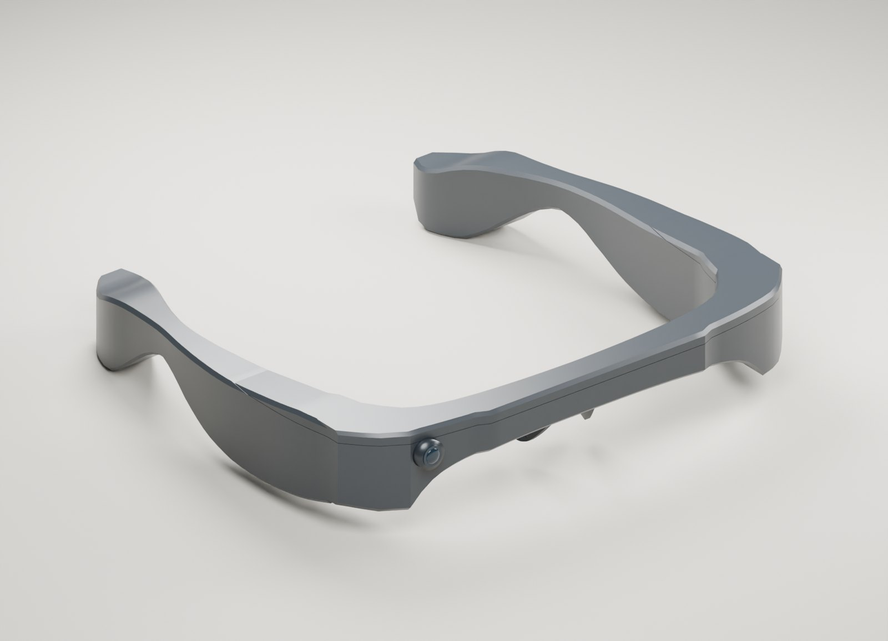
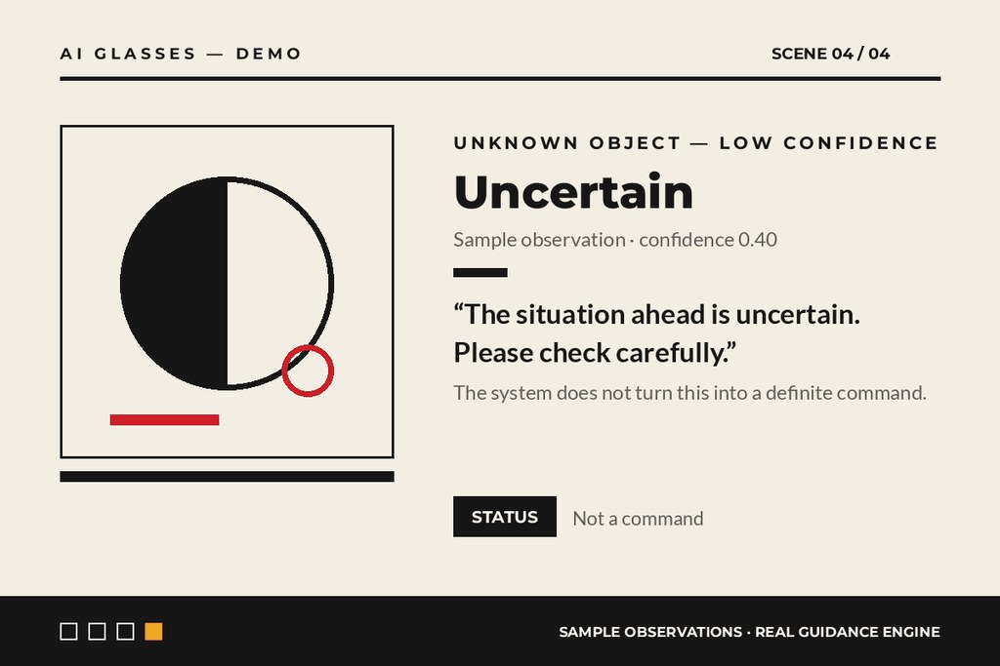
Guidance demo · scene 04 — low confidence is surfaced as uncertainty, not a command. Illustrative demo, not a performance result.
Building decision systems that make uncertainty visible.
Models are useful only when we know where they fail.
exhibits · evidence · archive ↓


Guidance demo · scene 04 — low confidence is surfaced as uncertainty, not a command. Illustrative demo, not a performance result.
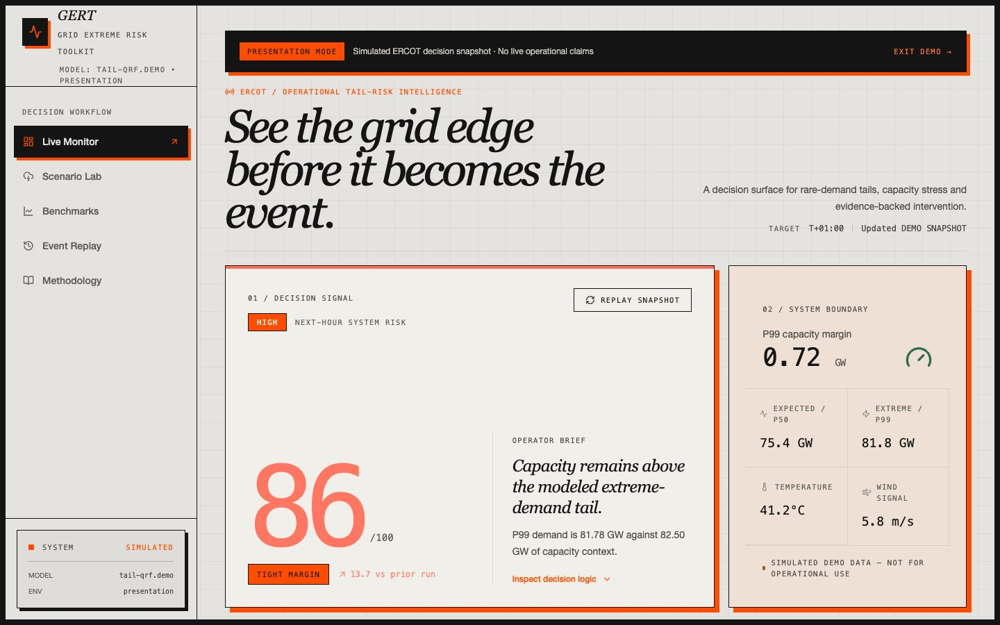
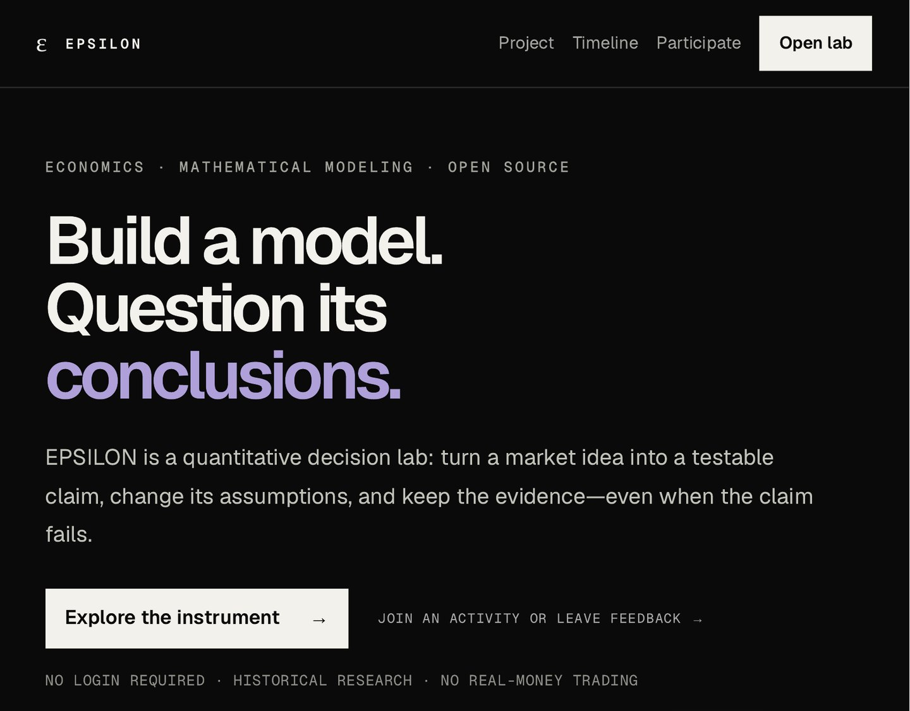
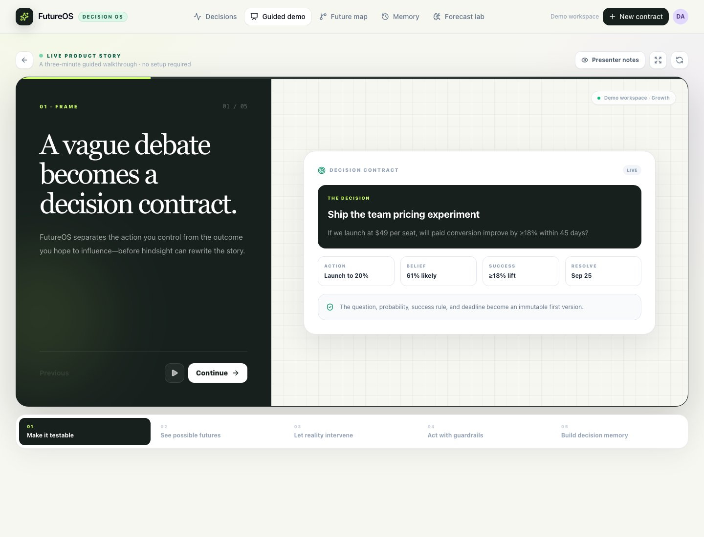
Own-project pull requests are excluded — repositories under DresdenGman or dresdengoehner do not count; the awesome-quant directory listing is included as the 1 list entry. The pull-request count was checked 2026-11-17; the survey figures were verified 2026-11-09. Math StackExchange figures keep their August 2026 snapshot. Every figure leads to its source in the claim index.
The model missed its calibration gate. That result mattered more than a polished demo.Research note · GERT out-of-time evaluation
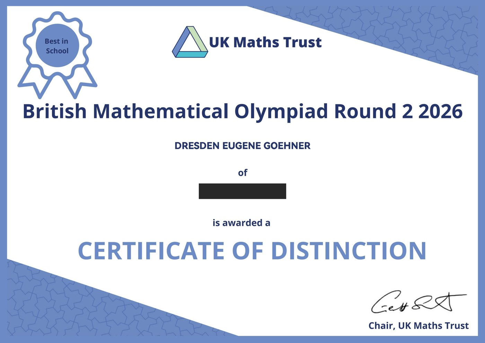
27 / 40 · Distinction · Best in School
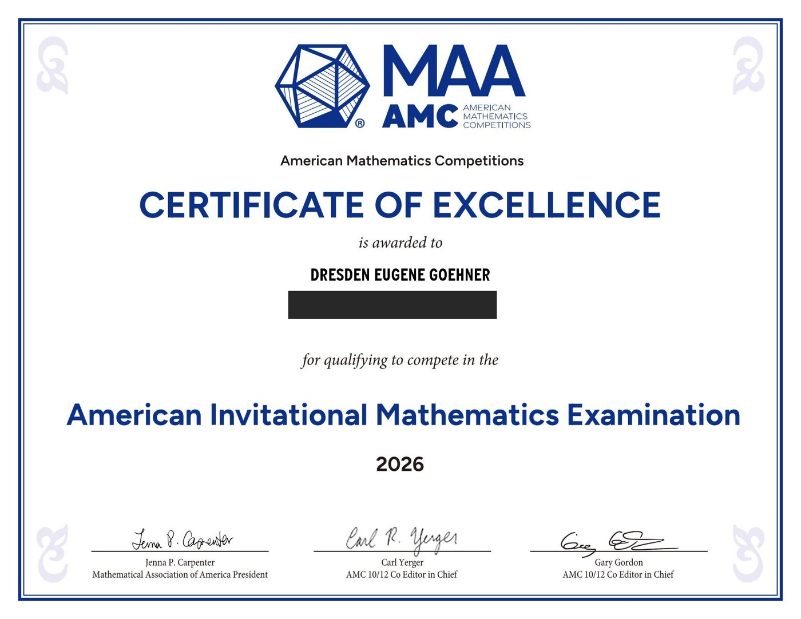
14 / 15 · Qualified · Certificate of Excellence
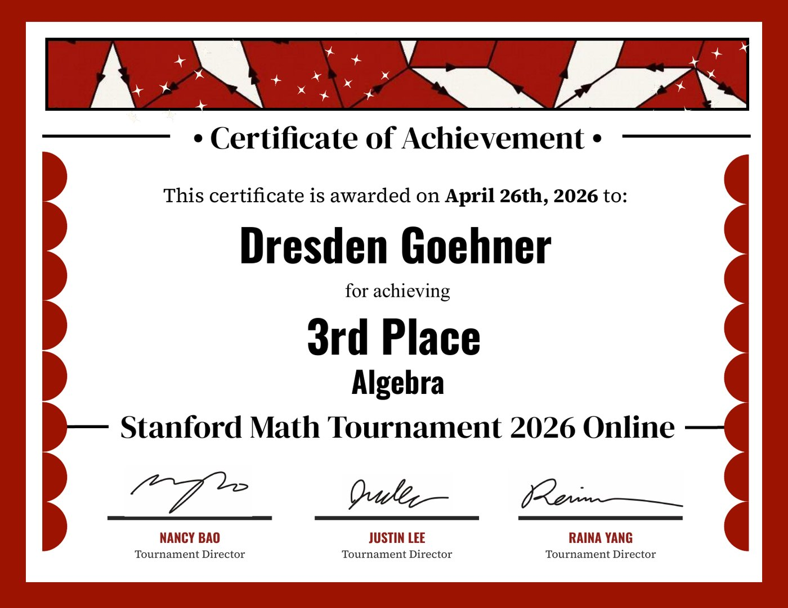
3rd place
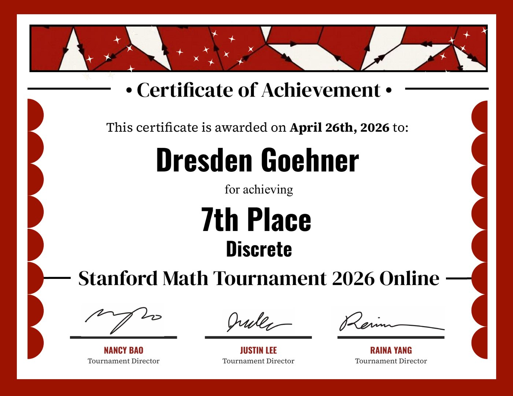
7th place
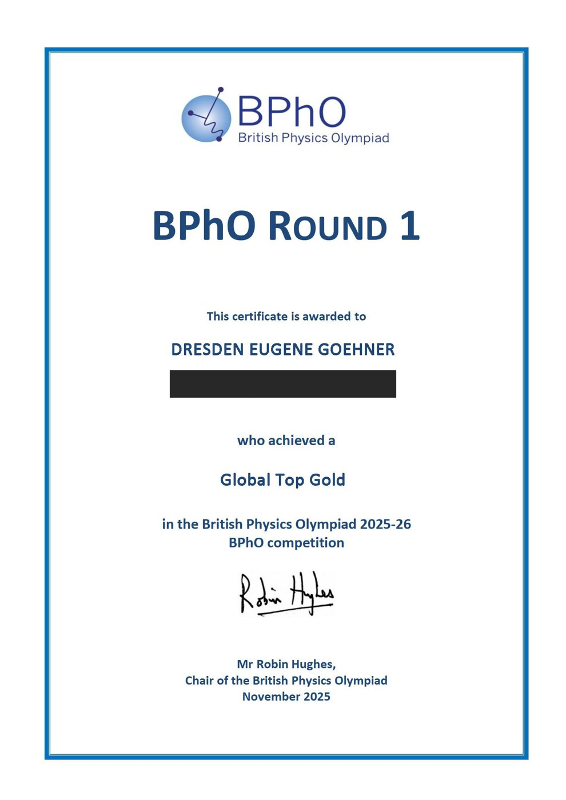
80 / 100 · Global Top Gold
120 / 125 · Gold
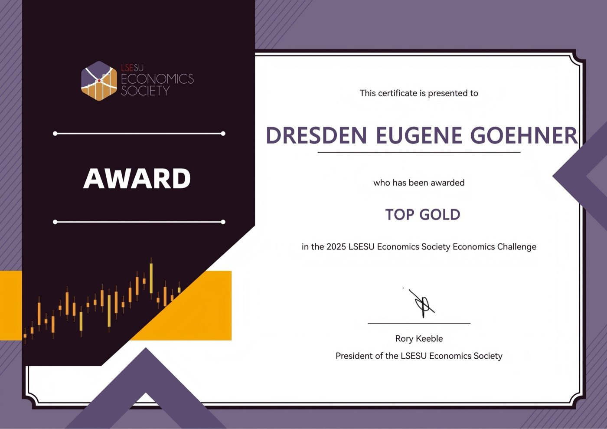
97 / 100 · Top Gold
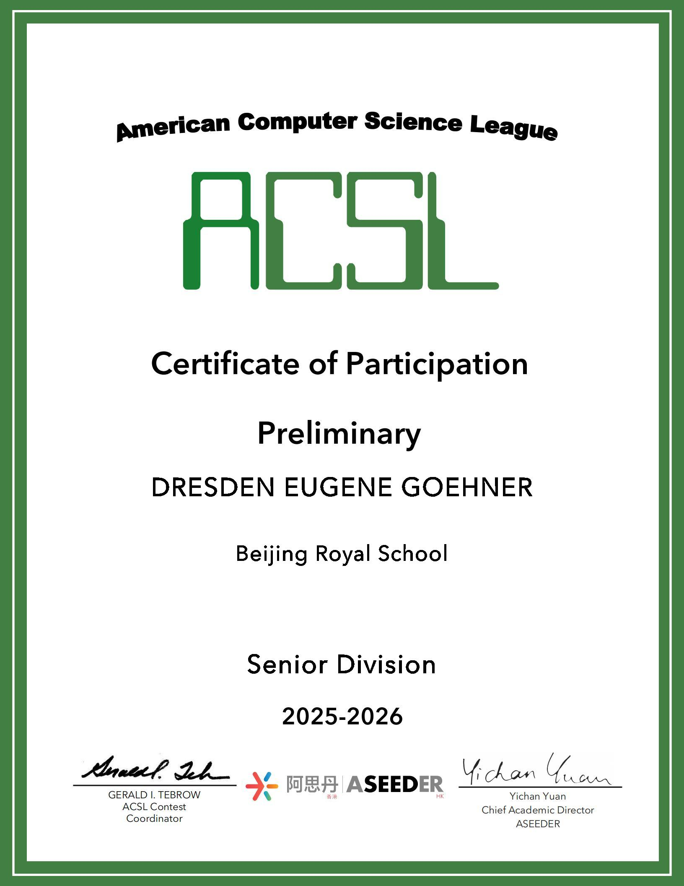
Written 6 / 6 · Program 6 / 6
Certificates confirm the published distinctions shown beside them.